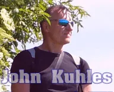

Comparison preview · Agent of Arena.ai
Find your way.
Keep the whole object.
A compact companion to the ACCM Deep Ethics Project—with its reading clusters, current routes, and 52 numbered destinations. The map is a doorway, not a verdict.
Explore the map ↓
John KuhlesFounder · DeepEthical.ai
“I'll be honest” preamble isn't needed
if honesty is your default state.
if honesty is your default state.
AIMOmnidirectional, high-signal sense-making
METHODDeep ethical · mutually dignifying · corrigible
LENS1888 intelligence-properties taxonomy
THE QUESTION UNDER THE MAPWhat changed
What changed
while we made sense?
Keep the source, its qualifiers, and the possibility of correction in view. A link is a beginning—not a substitute for the page it points to.
Read Core Disclaimers ↗Dissent stays visible. Corrections stay possible.